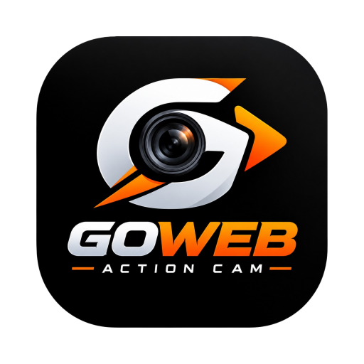

GoWeb
CAM
High-Performance Action Camera & Telemetry Overlay
Required Permissions:
Camera (Rear, 1080p/4K, High FPS)
Location (For Speedometer)
Launch Camera
Video Saved!
Save to Device
Dismiss
Acquiring GPS...
Normal
B&W
Sepia
Invert
Vivid